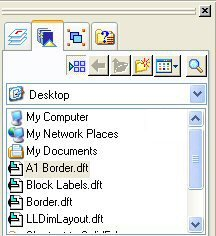
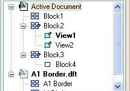
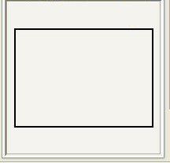
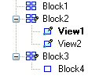
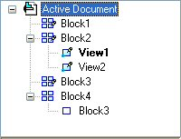

Displaying blocks in the Library pane
You can display the Block Library by selecting the Show Blocks button  on the Library tab of the Library window.
on the Library tab of the Library window.
 |
Block Library File List |
Displays all files in the specified folder. Block library files are those with extension .dwg, .dxf, and .dft. You can display thumbnail previews of the block file contents in the Block Library File List. To change from the file list format to thumbnails, use the Views button on the Library tab. To place an entire block file as a single block into the active document, drag the file from the Block Library File List onto the 2D Model sheet or the drawing sheet. |
 |
Block Selection Pane |
Lists all blocks in the active document by name. Also displays individual block names contained in an external block file when you click a file name in the Block Library File List (above). To place an individual block, drag it from the Block Selection Pane. To see the block shortcut menu, right-click in the Block Selection Pane. |
 |
Block Preview Pane |
Displays a graphical preview of a block name selected in the Block Selection Pane. Also displays the contents of a file selected in the Block Library File List. |
Working with block layers
Like AutoCAD, block occurrences reside on layers. When you place a block in a document, the occurrence is placed on the active layer.
Layer display in Solid Edge is controlled from the Layers tab in the Library window. If the layer the occurrence resides on is turned off, then all block graphics are hidden, including block graphics on layers that are set to display.
With nested blocks, where a block on one layer contains block graphics that reside on another layer, you can use the Show All Layers shortcut command to ensure that the block, and the block geometry that it references, are visible.
To move a block to a different layer, select the block occurrence graphics, and then use the Move Elements button on the Layers tab.
To learn about layer display and control, see Layers overview.
Identifying block types
Most of the block commands are available only from the shortcut menu in the Library pane, where block names display one of these icons:
|
Icon |
What it means |
|---|---|
 |
-No occurrences -Used -Alternate block view -Nested |
The block usage indicator mark is added when you place the first occurrence of a block in the document and removed when you delete the last occurrence.
In the example below, there are multiple representations of Block2 in the active document. View1 is the source or default view of Block2. View2 is another view of Block2.
Block4 contains Block3 as a nested block. Nested blocks are identified with a glyph that is an unfilled rectangle.
|
Block selection pane |
What it means |
|---|---|
 |
-Block1, Block2, Block3 are used in the document. -Block4 is not used. -View1 and View2 are alternate representations (block views) of Block2. -View2 is set as the default block view. -Block3 is used as a nested block in Block4. |
A block name that is listed in boldface in the Block Selection Pane indicates it is the default representation of a block with multiple views. The default block representation is the one displayed if you drag a block from the Library onto the drawing sheet. You can change or set a default block using the Set as Default command.
How do I
Create a blockPlace a block
View and modify block scale
Set a default block view
Learn more
BlocksUsing blocks
Organizing block libraries
Importing AutoCAD blocks
Scaling and rotating block graphics
Adding alternate block views
Look up more details
Solid Edge block terminology(Create) Block command
Block command bar
Block Occurrence Selection command bar
Place Block command
Block Options dialog box
Add Block View command
Set As Default (Block) command
Quick links
Block labels and propertiesEditing blocks
Connectors